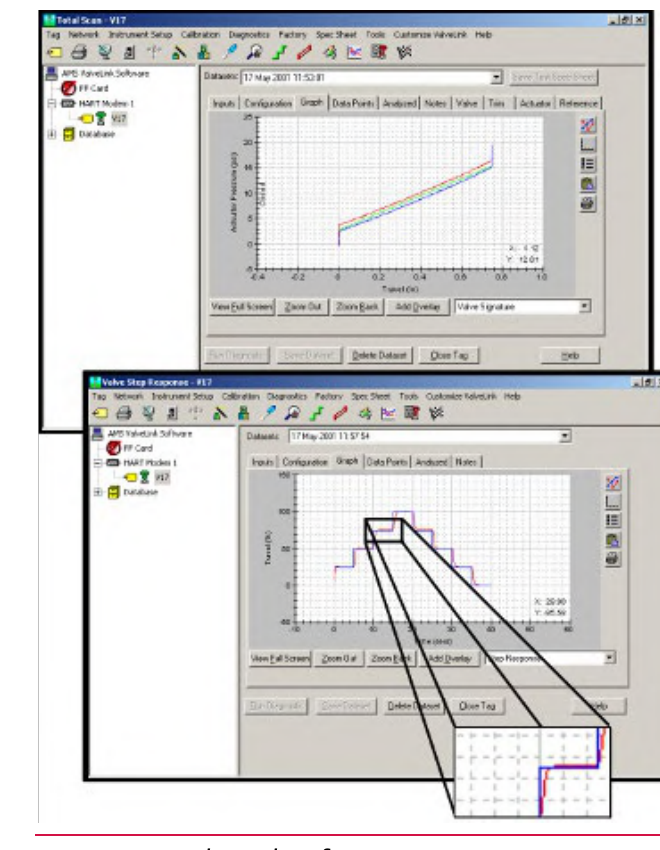

Two ValveLink Windows, Two Different Tests

Know which window you're in before reading the plot — a widened span on Total Scan is the same friction signal just shown; a trace on Valve Step Response is a different test, checking how the valve moves, not comparing it to a baseline signature.
After Control Valve Handbook, 6th ed., Fig. 2.10 — used directly, own printed window-title labels retained. Component Index: cvh-cmp-valvelink-software-screens.